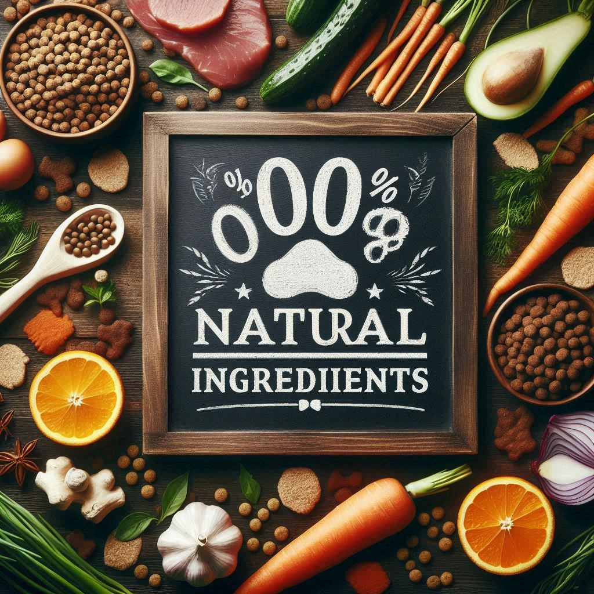
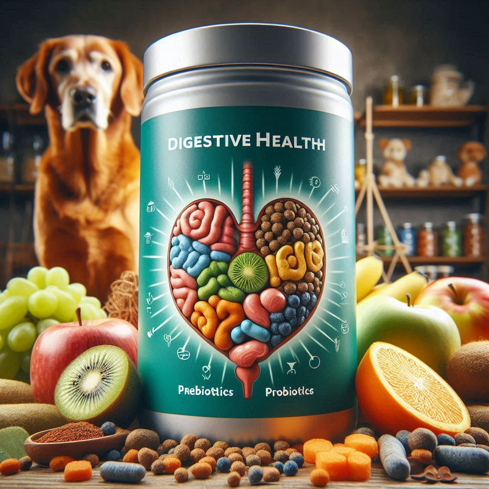
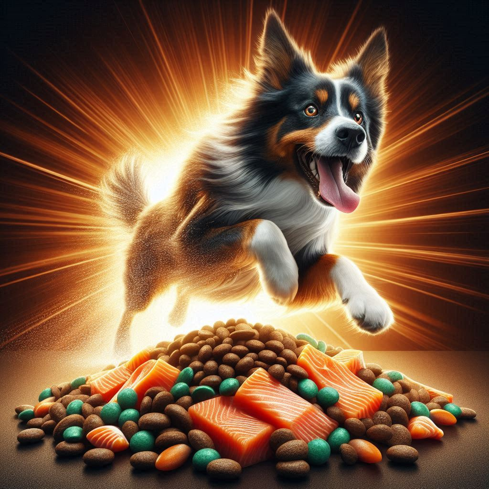

Ingredientes 100% Naturales
En NutriCan creemos que la salud comienza con lo que se pone en el
plato. Por eso, nuestra fórmula está compuesta exclusivamente por
ingredientes naturales, seleccionados cuidadosamente para garantizar
la mejor calidad. Utilizamos carnes frescas, vegetales orgánicos y
granos integrales que aportan los nutrientes esenciales para el
bienestar de tu perro.
Eliminamos por completo los conservantes artificiales, colorantes y
sabores sintéticos. Esto no solo mejora la digestión, sino que también
reduce el riesgo de alergias alimentarias y problemas de piel, comunes
en alimentos procesados. Cada bocado está diseñado para ser tan
saludable como delicioso.
Además, nuestros ingredientes provienen de productores locales
comprometidos con prácticas sostenibles. Así, no solo cuidas a tu
mascota, sino también al planeta. NutriCan es una opción responsable
para quienes buscan lo mejor para sus compañeros peludos.

Salud Digestiva
La salud digestiva es clave para la vitalidad de tu perro. Nuestra
fórmula incluye prebióticos y probióticos naturales que promueven el
equilibrio de la flora intestinal, ayudando a prevenir problemas como
la inflamación, gases y diarreas. Esto se traduce en una mejor
absorción de nutrientes y una mayor energía diaria.
Además, incorporamos fibras naturales provenientes de frutas y
vegetales que facilitan el tránsito intestinal. Esto no solo mejora la
regularidad, sino que también contribuye a mantener un peso saludable
y a reducir el riesgo de enfermedades gastrointestinales.
Muchos de nuestros clientes han notado una mejora significativa en el
pelaje, el aliento y el comportamiento de sus mascotas después de
cambiar a NutriCan. Un sistema digestivo sano es la base de una vida
larga y feliz para tu perro.

Energía y Vitalidad
NutriCan está formulado para proporcionar una fuente constante y
equilibrada de energía. Gracias a nuestras proteínas de alta calidad,
como el pollo y el salmón, tu perro obtiene los aminoácidos necesarios
para mantener sus músculos fuertes y activos. Esto es especialmente
importante para perros jóvenes, deportistas o mayores que necesitan
mantenerse en forma.
También incluimos ácidos grasos esenciales como el Omega 3 y Omega 6,
que no solo mejoran la salud cardiovascular, sino que también
promueven un pelaje brillante y una piel saludable. Estos nutrientes
ayudan a reducir la inflamación y a mantener articulaciones flexibles
y resistentes.
Con NutriCan, notarás que tu perro está más activo, feliz y con mejor
disposición para jugar, aprender y compartir momentos contigo. Porque
una buena alimentación no solo nutre el cuerpo, sino también el
espíritu de tu mejor amigo.